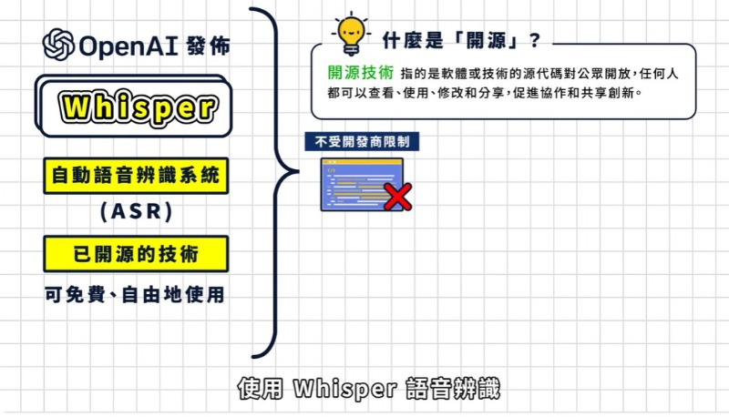
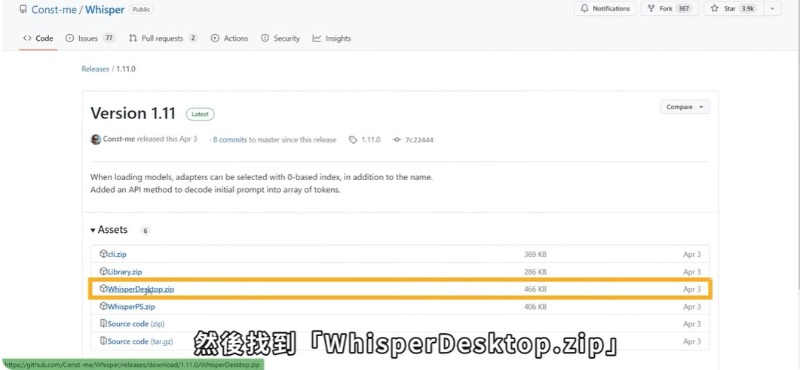

Brython <<
Previous Next >> 期中整合
教學影片上字幕
第三部影片:cd2024_2b_3_如何設定 Github 帳號的雙重認證
雲端連結:https://drive.google.com/drive/folders/14rW3dfK5eDZWoevWrpBh8a-cOjGDBygf
youtube:https://youtu.be/5LB7scXH1BE?si=rjd8QChoHB2vMF6h
1.影片上字幕教學
因為我也是第一次上字幕所以我先去看別人的教學,然後我找到"了AI 上字幕教學｜OpenAI Whisper 教學"這個好用的程式,我一步一步地跟他一起做然後不會的就上網找一下軟體的使用方法跟上字幕的一些技巧，然後在完成老師所交代作業。
1.首先要先下載WhisperDesktop (GitHub)

2.下載語言模組生成逐字稿

Brython <<
Previous Next >> 期中整合